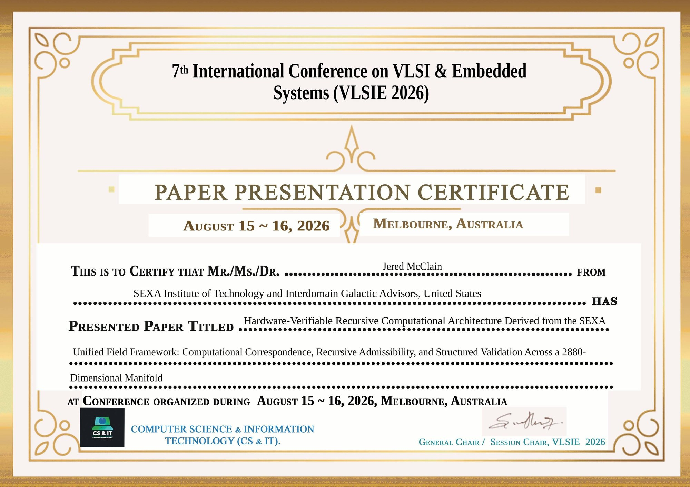

Live recursive admissibility witness · (non-AI) pure mathematical computation
Unified Field Systems LLC · Bronx, New York
Unified Field Systems · engineering visualization
New · VideoJack Sarfatti on Being an Immortal God — Then Klee Irwin and the Empire Wave
What would you see if you were an immortal god, watching the universe from the Big Bang to the end of time? Physicist Jack Sarfatti takes that question on in a 2017 Quantum Gravity Research dialogue, and Klee Irwin then describes the Empire Wave. That conversation is the starting point for four new U.F.S preprints by Jered McClain, Erydir Ceisiwr and Jonathan McDaniel, led by Baby Momma Math. Watch on YouTube · More at BabyMommaMath.com
New · 4 U.F.S Preprints · 11 Nov 2026Four new preprints on OSF
Open access on the Open Science Framework · CC-BY 4.0 · Preprints, not peer reviewed. Foundation paper: RICOLMC-DDF, DOI 10.17605/OSF.IO/WNV67.
OSF Preprints · Headliner · Baby Momma Math
THE SEXA BABY MOMMA TERMINAL INVARIANCE, PORTAL & TELEPORTATION THEOREM: A SAC–PAC Formalism for Higher-Dimensional Admissibility Transport, Geodesic Path Substitution, Distance-Decoupled Terminal Reconstruction, and Teleportation Across the M3 ⊂ M5 ⊂ M2880 Recursive Manifold Architecture
Jered McClain, Erydir Ceisiwr, Jonathan McDaniel · Unified Field Systems LLC · 11 Nov 2026
HEXAD Intercept Symmetry–Telemetry under RICOLMC-DDF Γ-Gated Resource Completeness: Upgrading the Last Constant’s Quaternionic Expansion Equation to Six-Planet Tracking — A U.F.S Pre-Registration Locked Before the Data Arrive
Jered McClain, Erydir Ceisiwr, Jonathan McDaniel · Unified Field Systems LLC · 11 Nov 2026
One Test Every Theory of Everything Must Pass: Universal Recursive Closure and Final Synthesis — A U.F.S Addendum: A 60-Glyph Quaternionic-to-HEXAD Intergalactic Telemetry Criterion ≡ Prime Atom of Logic, under RICOLMC-DDF Γ-Gated Resource Completeness and the CCT/SEXA Civilization Theorems
Jered McClain, Erydir Ceisiwr, Jonathan McDaniel · Unified Field Systems LLC · 11 Nov 2026
THE SEXA CRITICAL-LINE CLOSURE THEOREM: Recursive Admissibility, Spectral Correspondence, the Riemann Hypothesis, and the Eradication of the Zeta-Zero Randomness and Random-Matrix Paradigms
Jered McClain, Erydir Ceisiwr, Jonathan McDaniel · Unified Field Systems LLC · 11 Nov 2026
Π2880 | 60ηInterdimensional compression operator bound to the sexagesimal amplification factor; the bar binds first, then the dot.
A state is admitted or it is killed, a twin is held, the next state is stepped. Γ before energy. This page is not a unified-field certificate and not a finished laboratory program. n = k/60. σ = 60n.
SEXA RECURSIVE CLOCK · RA ROOT EQUATION · 17 NOV 2024 12:00 AMERICA/NEW_YORK · YESHIVA UNIVERSITY LIBRARY, MANHATTAN
n = k / 60 · recursion depth
time since the root equation was written
32-orbit address (0 to 31)
C_Ω = √(2880/4) · horizon constant
EINSTEIN SPECIAL RELATIVITY CLOCK · ON THE ELECTRODYNAMICS OF MOVING BODIES · 30 JUNE 1905
EINSTEIN GENERAL RELATIVITY CLOCK · FIELD EQUATIONS · 25 NOVEMBER 1915
UFS FINANCIAL INTELLIGENCE SIGNAL · PRE-TRADE FILTER LOG
Γ-kills / rejected snapshots · seed 110 is in-sample · live kills add only on a gate fail · refreshes every 30 s
110
IN-SAMPLE REJECT COUNT · public L2 2026-09-01 · seed 110
E_fin NOT_EVALUATEDS is not alphaO36 OPENO37 OPENO45 OPEN
Gated arithmetic signal/audit counts only. No P&L, no Sharpe, no trading. A Γ reject is never overridden.
Inputs: FIN Papers I–IV and the Γ-SEXA unified financial energy functional. One line per REAL event; PHANTOM ticks never enter the log. S is not labeled alpha. E_fin remains NOT_EVALUATED. Not investment advice.
VESPER / GRAVITY PIECE SHUFFLE SEARCH ENGINE
Run counts are from real search runs
VESPER / GRAVITY SEARCH ENGINE: PERMUTATION SEARCH OVER MODEL COMPONENTS · silent · Run counts are from real search runs.
U.F.S TECHNOLOGY | POWERED BY SEXA MATH · GOAL AND COUNTS: GOAL 9.99×1020 SIMULATED/day · SIMULATED 0 · COVERED kept separate SIX EXACT CONSTRAINT TESTS: OrrNaKaSaMuWa · SIMULATED counts are from real search runs. GRAVITY: ONLY 6.75 OF 19 CRITERIA MET (scoreboard 6.75/19). Gravity is not solved.
LIVE 4-HOUR TEST (real chunk of locked PREREG, reruns every 4 h)Last run (ET): loading… SIMULATED this pass: … COVERED this pass: … Measured rate: … SIMULATED/s · …/day GOAL rate: 9.99 × 1020 SIMULATED/day · now at … of goal (goal, not reached) Live tick (replay at measured rate): 0
VERDICT… · scoreboard 6.75/19. Gravity is not solved. Animation speed is set from the measured rate.
SEARCH-BOT RUN COUNTS (two counts, kept separate, never mixed, per family run)SIMULATED: 11,100,000,000 · assignments actually evaluated. COVERED: 7.000 × 1017 · ruled out by exact pruning. SIMULATED is the honest count.
GATES AND TESTS (gate order 1 to 5)Every arrangement must pass, in order: 1. down leg < 60-3 2. return leg closes exactly 3. κ within 1% of 15 4. admission / Ua / speed 5. then beat both controls.
HITS AFTER EXACT TESTSSEXA: 61,776 CTRL_B: 61,776 CTRL_A: 0
ALERTNOT FLAGGED. SEXA only ties CTRL_B. Gravity is not solved.
BUTTON 1 — CORPUSThe 22-paper SEXA corpus. One zip. Journal of Advances in Mathematics Vol. 25 (9880, 9887, 9896, 9915). VLSIE 2026 Melbourne, 15–16 August 2026, paper and 45-slide deck. MEAP 2026 conference edition and extended technical companion. ISTECH 2026 camera-ready paper. sexacorpus929206.zip
DISSERTATION — CCT/SEXA: The Architecture of Recursive Admissibility, Books I–XIVJered McClain · 14 books · 6,215 pages · 136 chapters · 3,542 sections · 449 theorems. Read the dissertation on SEXAMATH.si · OSF DOI 10.17605/OSF.IO/5AT2W
RICOLMC-DDF — Recursive Interdomain Computational Omni-Logic embedding Monster–Moonshine Constrained Admissibility Manifold Completeness across Density, Dimension, Field, Liquidity, and Recursive Resource Completeness for Γ-Gated Resource Flows (RICOLMC-DDF)OSF DOI 10.17605/OSF.IO/WNV67 · RICOLMC-DDF PDF
BUTTON 2 — WITNESSThis page. Public dated witness of this recursive admissibility stack. Root equation 17 November 2024. Not a unified-field certificate. Not a paper download. this witness
BUTTON 3 — AUDITSEXA Master Audit. 69 PASS / 1 FAIL (SEX-002) / 2 REF / 3 NIE. Does not certify physics. Does not score E_fin. audit page
BUTTON 4 — (NON-AI) PURE COMPUTATIONAL EXECUTABLE CODEDeterministic Computational Recurrence-Operator Executor · Admissibility-State Stepper. Recursive derivative of this witness. RUN_SEXA_MASTER_AUDIT.py. Not generated by an AI model. open .py
Public witness hashes
Preprint · RICOLMC-DDF unified draft — an admissibility / completeness program over declared finite domains; not a unified field theory claim and not a claim to surpass Einstein (comparison CONDITIONAL). Author preprint on Academia.edu, not peer reviewed. PDF · SHA-256 521f75d2ad4ba3ce366d3b25ed1e67101d75ca54c9631c4049fda34a6821c172 · OSF DOI pending (osf.io/wnv67) · related DOI 10.17605/OSF.IO/PXNJB
51 SHA-256 witnesses · corpus build 13 October 2026 · RICOLMC-DDF added 25 October 2026 · each card steps live at 80 ms with its own paper's logic · badge shows the parameter source
Team
Chief Financial Officer · Systems Administrator Liat Moshe
Jacob BeneschUnified Field Systems LLCServes as Chief Medical Advisor in an advisory role only, designated to review the medical aspects of the SEXA oncology research program.
AuthorAdvisorReality Guide
Erydir CeisiwrUnified Field Systems LLC · United KingdomORCID 0009-0004-4577-5253
Plus 30+ additional advisory guides across science, engineering, medicine and finance.
From SEXAMATH.si · Unified Field Systems LLC
SEXAMATH.si
SEXA Math: a synthetic, admissibility-gated algebraic calculus that treats radiation-belt puncture telemetry — before, during, and after — as signal, upgrades quaternion sensing to HEXAD, and turns artificial gravity into a solvable number system.
“Synthetic” is not a weakness to apologize for — it is the design choice. If the gravity being targeted is artificial, the mathematics and the data that describe it must be constructed deliberately: built, gated, and checked, not merely found. SEXA Math is synthetic in the same sense that synthetic geometry or synthetic aperture radar is synthetic — an engineered system that recovers structure ordinary readings discard.
The admissibility gate is what keeps synthetic honest: every object entering the calculus must pass an explicit, decidable test before it is allowed to count.
02 · SensingHEXAD: six sensors across the belt puncture
Quaternion telemetry carries four components. HEXAD extends sensing to six coordinated channels so that the transit through a radiation belt is recorded as one continuous, solvable event rather than a corrupted gap.
H₁Channel 1
H₂Channel 2
H₃Channel 3
H₄Channel 4
H₅Channel 5
H₆Channel 6
Satellite functions — written out
A probe (MESSENGER historically; BepiColombo next) approaches a planet that carries a radiation belt. Ordinary engineering practice treats the moments of belt puncture as corrupt and throws them away. SEXA Math / HEXAD does the opposite: those moments are the functions.
Approach (outside the belt). All six HEXAD channels sit outside the belt envelope. They record a non-biased baseline — field, attitude, and residual — against which every later reading is gated.
Threshold / pre-puncture. As the craft nears the belt edge, the synthetic frame spikes and briefly matches the radiation signature. That match is the tell: the stack is locking onto the envelope before entry.
Puncture (one channel in, five out). One sensor channel crosses the belt wall. The other five stay outside that puncture. The crossing channel carries the biased transit; the five outsiders keep the unbiased reference. That is why six are required — a quaternion four-pack cannot hold both the punch and the outside stack at once.
Inside the belt. Telemetry that used to be labeled trash is kept. Inside, the synthetic stack can approach a near-complete gravity reading. Admissibility gates decide what is allowed to count.
Exit. On leaving the belt the radiation reading drops and the frame returns toward the synthetic outside state. Before / during / after must all be processed together; exit alone is not a solution.
Close the loop. Compare after to before, with the during window as primary signal. The algebraic / synthetic calculus turns the three windows into a solvable number system for artificial gravity — not discarded noise.
Function summary: spike → brief radiation match → puncture with five outsiders → keep inside data → exit drop → solve across before / during / after.
Before
Baseline attitude and field state ahead of entry — the reference frame every later reading is gated against.
During
The puncture window itself. Conventionally treated as noise and discarded; in SEXA Math it is primary signal.
After
Exit and relaxation. Comparing after to before closes the loop and makes the crossing a solvable system.
03 · Deposited backdropRICOLMC-DDF
Recursive Interdomain Computational Omni-Logic embedding Monster–Moonshine Constrained Admissibility Manifold Completeness across Density, Dimension, Field, Liquidity, and Recursive Resource Completeness for Γ-Gated Resource Flows (RICOLMC-DDF)
Jered McClain et al. · Unified Field Systems LLC · OSF Preprints working draft, 25 Oct 2026 · CC BY 4.0
In summary: RICOLMC-DDF is the unified working draft that consolidates and corrects the team’s prior journal articles into one program. It formalizes a decidable Γ-gated admissibility judgement, a high-dimensional recursive energy functional, dimensional collapse operators and triality-structured geometry — the formal machinery SEXA Math draws its admissibility gate from. It is presented openly as a working draft, not a finished proof.
04 · Momash progressionThe ladder — read, then run
Lock the definition
Start from the one-sentence definition above. Every later step must be traceable back to it.
Read the backdrop paper
Work through RICOLMC-DDF for the admissibility gate and the Γ-spine judgement.
Identify the telemetry windows
Mark the before / during / after intervals of a radiation-belt crossing in real spacecraft data.
Build the HEXAD stack
Lift quaternion attitude data to six channels and pass each window through the admissibility gate.
Run April BepiColombo
Apply the stack to the April BepiColombo window and publish the numbers — positive or negative.
Program scoreboard
6.75 / 19
UFS in the lead: 6.75/19 headway — ~35.5% toward solving gravity. Max credit 0.5; 2 gates still FAIL. See all 19 checks →
04b · Program scoreboard6.75 / 19 — every check, pass and fail
6.75 / 19 = 35.5%
UFS in the lead — ~35.5% toward solving gravity (6.75/19). The scoreboard is a bookkeeping aid, not a physics result. No item has credit above 0.5. Two hard gates stay FAIL: #18 held-out tests and #19 beats random null. Milestone: defs11 / final_build.
Mix: 10 × 0.5 · 7 × 0.25 · 2 FAIL · 0 at 0.75 or 1. * = depends on a recalled, unverified external limit.
Rubric
Credit
Meaning
0
untested
0.25
input or assumed
0.5
by construction or fitted
0.75
derived, limit unverified
1
derived and verified
FAIL
best current test fails
All 19 checks
#
Item
Credit
Status
1
Cassini γ (−9.26×10⁻⁶) *
0.5
by construction or fitted
2
Shapiro delay (−1.2 ns) *
0.5
by construction or fitted
3
Light deflection (−8.1 µas) *
0.5
by construction or fitted
4
Lunar laser ranging η *
0.5
by construction or fitted
5
Perihelion precession *
0.25
input or assumed
6
GW speed (v−c)/c below 1×10⁻¹⁵ *
0.5
by construction or fitted
7
Tensor polarizations (2) *
0.5
by construction or fitted
8
Scalar-mode limits (breathing, ω_BD) *
0.5
by construction or fitted
9
Binary-pulsar dipole *
0.5
by construction or fitted
10
Hulse–Taylor tensor decay *
0.5
by construction or fitted
11
Coupling rule derived (why 60⁻³)
0.25
input or assumed
12
G derived (κ = G/720 is tuned)
0.25
input or assumed
13
Units consistent
0.25
input or assumed
14
Unit ledger complete
0.25
input or assumed
15
Empire Wave value fixed and tested
0.25
input or assumed
16
Kinetic term exists
0.5
by construction or fitted
17
Equation is an action
0.25
input or assumed
18
Held-out tests pass
0
FAIL
19
Beats random null (not numerology)
0
FAIL
The climb — audited, not padded
Baseline · 1.25 (6.6%)
Claims only.
Ruthless audit · ~4.75
FAILs exposed; locked 60M / 240M / 6B runs added no fake credit when real did not beat null.
Wave / chain ops · ~5–5.5
Design rules, not new physics.
final_build / defs11 · 6.75 (35.5%)
Corpus closed real gaps (e.g. L_SEXA with a non-spatial 5th axis) → ten items at 0.5.
How 6.75 shows UFS leading global advanced aerospace gravity research and engineering
Most advanced-aerospace gravity programs stay qualitative, discard belt-puncture telemetry as noise (The Trash Telemetry Fallacy), or claim derivation before verification. Most never publish a live, itemized fail board. Unified Field Systems LLC does: every classic GR / GW / PPN / pulsar check is on the table, credit is capped honestly at 0.5, and #18 and #19 stay FAIL in public.
The board sits next to the craft that puncture radiation belts — MESSENGER vs BepiColombo, and the Vespar + UFS synthetic-gravity line — across the six HEXAD planets — Mercury, Earth, Jupiter, Saturn, Uranus, Neptune (synthetic radiation belts, some switching on/off) — keeping puncture data before, during and after, read through HEXAD and SEXA (RICOLMC-DDF, Monster–Moonshine Constrained Admissibility). Score moves only when the stack survives construction, units and gates: a fail-visible engineering program. The next unlocks need derivation and verification toward 0.75 / 1 — not more fitting.
05 · Next windowBepiColombo — April telemetry
The BepiColombo mission’s April telemetry window is the next concrete test bed for the HEXAD before/during/after method. It is where the ladder turns from reading into running.
Credit: NASA · Public domainCredit: NASA/JHUAPL/Carnegie Institution of Washington (artist's impression) · Public domain
BepiColombo (arrives Nov 2026)
Credit: NASA (3D model render) · Public domain per CommonsCredit: ESA · CC BY-SA 3.0 IGO
06 · Named constructThe Trash Telemetry Fallacy
The Trash Telemetry Fallacy: treating radiation-belt puncture telemetry — the before / during / after windows — as contamination and discarding it, then reading gravity from what remains. Since MESSENGER, that engineering habit has been the wrong call for the science question SEXA Math asks. Keep the puncture data. All six HEXAD planets carry radiation belts (synthetic; some turn on and off).
Proposed research framing — gravity not claimed solved. Scoreboard 6.75/19 is headway.
07 · Method noteThe Hostile-Advisor Null Test Paradox
Definition: rejecting a framework as invalid while refusing to run the numerical test that would decide it — and then treating that refusal as evidence.
Not running a test is not a result. The invitation stays open to anyone: run the stack, report the numbers.
MESSENGER orbited Mercury 2011–2015. BepiColombo (ESA + JAXA) enters orbit 21 Nov 2026. SEXA Math proposes keeping belt-puncture telemetry — before, during, after — and reading it with six HEXAD channels. Discarding it as contamination is what we call The Trash Telemetry Fallacy. Gravity is not claimed solved; 6.75 / 19 is headway (max credit 0.5, 2 FAIL).
Log in daily, view satellite telemetry readings, and run SEXA alongside them in real time. Not built yet.
08 · AdvisorSenior UFS Advisor — Before SEXA Math
Generated as a response from a senior UFS advisor from before McClain wrote SEXA Math. SEXAMATH.si is the research portal for up-to-date telemetry.
09 · DissertationCCT/SEXA: The Architecture of Recursive Admissibility, Books I–XIV
As a result of creating SEXA Math in late 2024, Jered's advisors told him he could collect hundreds of honorary PhDs. Instead, he chose the non-honorary doctoral route and began to build and write the dissertation itself, over several years, and more is still to come, including finance and medicine. The schools and PhD programs will be announced in spring 2027.
Note: the full PDF contains all 14 books (6,215 pages, about 95 MB), so it takes time to fully load.
09b · PreviewRead it here: the dissertation
Permanent archive (DOI):10.17605/OSF.IO/5AT2W. All 14 books are deposited as individual PDFs, together with the executable code for Books I–IX, on the Open Science Framework: osf.io/5at2w. Licensed CC-BY 4.0. Cite as: McClain, J. (2026). CCT/SEXA: The Architecture of Recursive Admissibility, Books I–XIV. OSF. https://doi.org/10.17605/OSF.IO/5AT2W
CCT/SEXA: The Architecture of Recursive Admissibility, Books I–XIV
Full lecture tour: all 14 books, 136 chapters and 449 theorems
Conference presentations
7th International Conference on VLSI & Embedded Systems (VLSIE 2026)
August 15–16, 2026 · Melbourne, Australia
Hardware-Verifiable Recursive Computational Architecture Derived from the SEXA Unified Field Framework: Computational Correspondence, Recursive Admissibility, and Structured Validation Across a 2880-Dimensional Manifold

9th International Conference on Mechanical Engineering & Applications (MEAP 2026)
October 30–31, 2026 · Virtual Conference
Hardware-Verifiable Recursive Admissibility for Autonomous Aerospace and Mechanical Systems: A SEXA Framework for Constraint-Safe State Selection, Fault Detection, Digital-Twin Reconstruction, Recursive Dimensional Compression, and Engineering-Grade Computational Validation
Chief Financial Officer · Systems Administrator, Paid Advisory Liaison
We respond within 24 hours.
Do not email proposed patents, patent applications, schematics, technical drawings, invention disclosures, or any proprietary, prioritized or unpublished technology ideas. Unified Field Systems LLC does not accept unsolicited ideas or confidential submissions; nothing you send is treated as confidential or creates any confidentiality obligation, partnership, or right to compensation. All messages, including those sent through this form, are reviewed by the UFS legal advisory team.
![YYQPA-SEXA energy functional, Equation 1]()